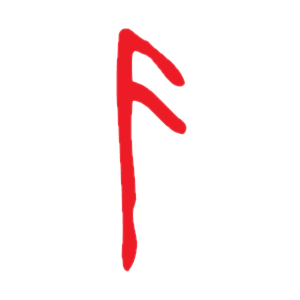

Ранние годы
Атрей был зачат между греческим полубогом, превратившимся в бога войны, Кратосом и Ётуном по имени Лауфей, которого он называл Фэй . Он был болезненным ребенком и только недавно стал достаточно здоровым, чтобы путешествовать. О его прошлом известно немногое, кроме того факта, что Кратос редко бывал дома, потому что он практиковал контроль над своей яростью, которую Атрей ошибочно интерпретировал как охоту. Некоторое время спустя Фэй скончалась, хотя причины этого до сих пор неизвестны.
После смерти матери Атрей встречает своего отца, который рубил дерево, отмеченное Фэй. Атрей помогает отцу подготовить тело матери к кремации и берет материнский нож. Пока они ждут, пока ее тело полностью сгорит дотла, Кратос приказывает Атрею охотиться на оленей, чтобы узнать, хватит ли у него навыков, чтобы пережить путешествие, чтобы исполнить предсмертное желание своей матери; развеять ее прах на высочайшей вершине всех миров. Они выслеживают и находят оленя, но Атрей стреляет слишком поспешно и не может убить оленя одним выстрелом, что приносит ему ругательство от Кратоса. В конце концов они находят оленя, и Атрею удается вывести его из строя, но он шокирован, когда Кратос приказывает ему нанести смертельный удар, поскольку он никогда не убивал что-либо раньше. С помощью отца Атрей наносит удар оленю в горло.тролль нападает на них. Столкнувшись с опасностью, Атрей помогает своему отцу стрелять из лука в битве, и оба они успешно убивают тролля. Однако Атрей теряет контроль над своей яростью и продолжает атаковать труп, останавливаясь только после того, как Кратос возвращает его в чувство. Из-за этого Кратос заявляет, что мальчик не готов к путешествию, к его большому разочарованию, и они возвращаются домой.
Однако незнакомец появляется на пороге их дома вскоре после того, как они отправляются домой. Кратос приказывает Атрею спрятаться в подвале, пока он противостоит незнакомцу. После того, как Кратос сражается и побеждает незнакомца, он возвращается в дом и приказывает Атрею подготовиться к путешествию, заявляя, что их дом больше не безопасен. Когда они направляются к самой высокой горе в стране, Атрей замечает, что их дом был окружен волшебной рощей деревьев, которая была сломана, когда Кратос срубил дерево из упомянутой волшебной рощи, нарушив защиту, которую она обеспечивала.

Личность
Атрей - счастливый и любопытный ребенок, который добр к другим, когда он разговаривает с ними, полагая, что он должен помогать людям, живы они или мертвые. Он любит изучать и изучать скандинавскую мифологию, особенно от Мимира и Фрейи.
Когда он был ребенком, Атрей выучил различные норвежские языки и охоту от своей матери. Однако из-за его нежного характера он сначала не решался покончить с собой, будь то невинный олень или тролль, напавший на его отца. Несмотря на это, Атрей постоянно пытается доказать отцу, что может справиться сам. Подразумевается, что он чувствует себя нежеланным своим отцом и что это чувство отвержения - вот что заставляет его стать лучшим воином. Из-за того, что он рос вместе с ним, Атрей абсолютно не боится Кратоса и, как его мачеха Лисандра , не стесняется вызывать своего отца, когда ему нужно. Поначалу он был наивен, как и его сводная сестра Каллиопа.
У Атрея много недостатков, проистекающих из его молодости и неопытности, но, похоже, он также унаследовал некоторые отрицательные черты своего отца, в первую очередь его ярость и самоуверенность. Когда Атрей узнает о своей божественности, это постепенно начинает его изменять из-за непонимания того, что значит быть богом, в сочетании с желанием отца, чтобы он стал лучше. В этот момент он становится дерзким и импульсивным, становится грубым с Синдри и говорит ему заткнуться о его соперничестве с братом, поскольку он считает это мелкой проблемой, и просит Мимира замолчать после того, как последний прокомментирует его новое изменение отношения. Он также часто без колебаний бросается в бой без промедления. Вскоре у него нет проблем с лишением жизни, например, когда он убивает Моди, полагая, что быть богом дает ему право делать все, что он хочет. Это также делает его очень неосторожным в бою; это очевидно во время битвы с Бальдуром: Атрей не подчиняется приказам своего отца отступить, что в конечном итоге приводит к телепортации двоих в Хель. Получив выговор от Кратоса за свое поведение, Атрей по большей части возвращается к своей прежней личности. После того, как Атрей стал свидетелем попытки Балдура убить свою мать и узнать правду о прошлом Кратоса, он становится намного скромнее. Ему отталкивает идея цикла отцеубийства после того, как он узнал о смерти своего деда Зевса от рук Кратоса. После того, как Атрей стал свидетелем попытки Балдура убить свою мать и узнать правду о прошлом Кратоса, он становится намного скромнее. Ему отталкивает идея цикла отцеубийства после того, как он узнал о смерти своего деда Зевса от рук Кратоса. После того, как Атрей стал свидетелем попытки Балдура убить свою мать и узнать правду о прошлом Кратоса, он становится намного скромнее. Ему отталкивает идея цикла отцеубийства после того, как он узнал о смерти своего деда Зевса от рук Кратоса.
Атрей также показал, что очень заботится о Мидгарде, определенно больше, чем Кратос, поскольку после осознания важности восстановления Валькирий из-за того, что они были теми, кто не дает мертвым захватить Мидгард, он быстро согласился, в то время как Кратос не заботился что заключение валькирий означает, что Хельхейм будет переполнен душами мертвых.

Оружие
Когтистый лук - Атрей владеет луком и, если его не отвлекают, является точным лучником. Он также искусен в использовании лука в качестве дробящего оружия, позволяя ему споткнуться или задушить своего противника.
Нож Фэй (ранее) : В дополнение к луку, которым он владеет, Атрей также владеет ножом, который когда-то принадлежал его матери Фэй. Он использует его как дополнительное оружие и использовал его, чтобы убить оленя. Нож был уничтожен после того, как его использовали, чтобы спасти его отца от ловушки, когда он воткнул нож в зубчатый механизм.
Нож Атрея : после того, как Атрей пожертвовал ножом своей матери, чтобы спасти своего отца, он получил новый нож от своего отца. Новый нож был одним из двух ножей, которые Кратос сделал в день рождения Атрея. Он был сделан из смеси металлов с родины Кратоса и металлов с земель, на которых они в настоящее время находились . Один из этих ножей был сделан для самого Кратоса, а другой был сделан для того, чтобы отдать Атрею в тот день, когда он будет готов им владеть. Атрей, в своем высокомерии после того, как обнаружил, что он наполовину бог, отмечает, что этот нож намного лучше, чем Нож Фэй.

Оружие
Скорее всего из-за того, что он был сыном бывшего бога войны и воительницы морозной великанши. Атрей обладает значительными сверхчеловеческими физическими способностями, но из-за своего возраста и лет болезни он значительно слабее, чем должен быть. После того, как Кратос рассказывает ему о своем происхождении, его болезнь отступает, и постепенно появляется часть его силы.
Опытный боец: Хотя Атрей не так силен и опытен, как его отец, он сам по себе довольно опытный боец. На протяжении всего своего путешествия Атрей быстро учится, поскольку его навыки значительно улучшаются по сравнению с тем, когда они были в начале (в зависимости от улучшений игрока). Он может воспользоваться своим маленьким размером и сочетать свои навыки стрельбы из лука с акробатическими трюками, такими как выведение из строя драугов, забравшись на них и задушив их своим луком, чтобы Кратос открылся или стрелял стрелами в воздухе. Когда Кратос оставил его одного, чтобы собрать Свет, он смог самостоятельно убить волны темных эльфов, прежде чем он решит спасти своего отца. В бою Атрей эффективно действует как поддержка и продолжение Кратоса, позволяя паре объединить свои боевые стили в синхронное нападение.